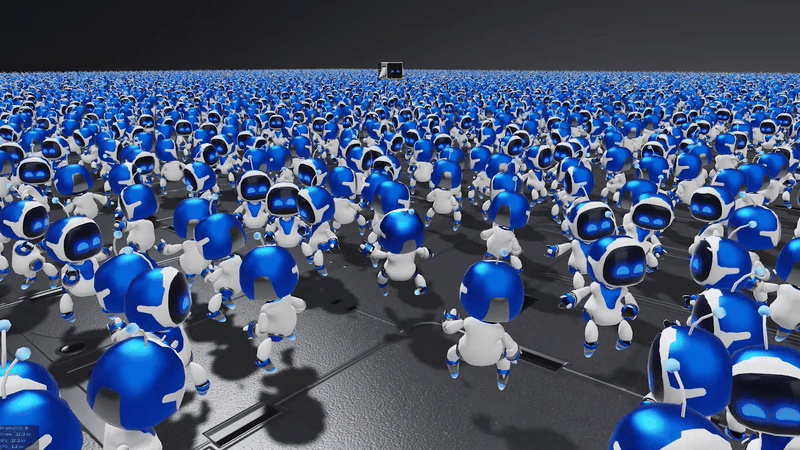
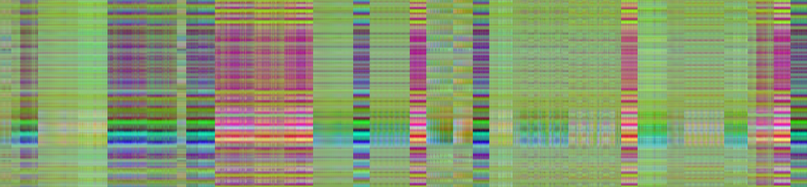
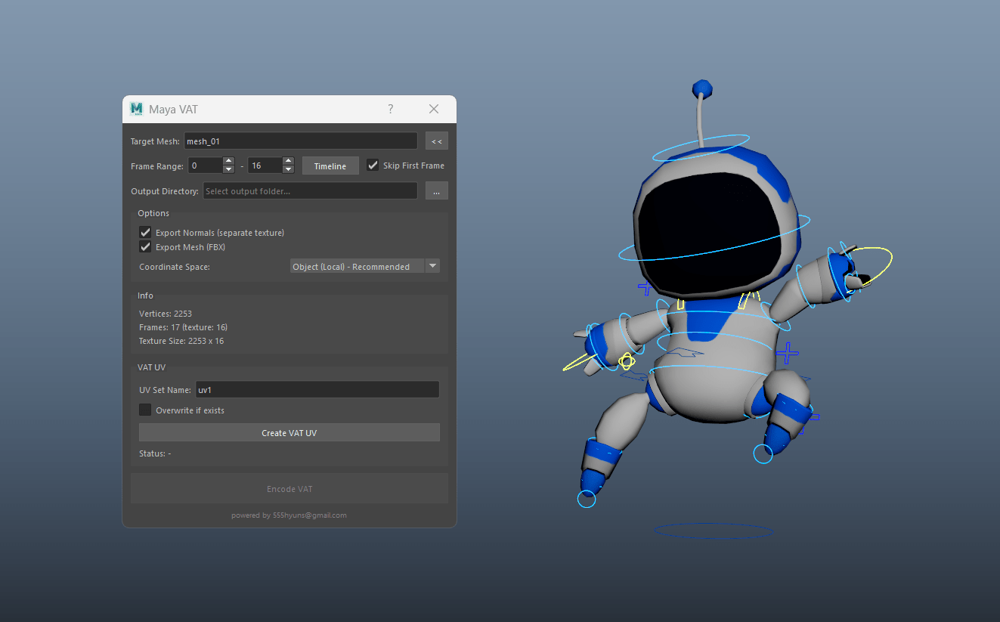

Maya VAT Encoder
A free, open-source vertex animation texture (VAT) baker for Autodesk Maya. Turn skinned meshes, blend shapes and deformers into textures you can play back on the GPU. No Houdini required.

Why VAT?
Vertex animation textures store per-vertex positions for every frame in an image. A simple vertex shader reads them back, so you can render thousands of animated instances (crowds, foliage, destruction, cloth, FX) without skeletal skinning cost. Most VAT tools live in Houdini. This one runs entirely inside Maya, in pure Python.
What a bake looks like
The real textures baked from the Astro Bot in the demo: 2253 vertices × 524 frames. Every column is one vertex and every row is one frame. Move over the texture to read out where you are.

- Calm areas
- Vertices that barely leave the proxy pose.
- Vertical bands
- Parts that move a lot, such as arms and legs. Vertex IDs tend to follow modeling order, so one body part often sits in neighboring columns.
- Horizontal bands
- Frames where the whole body moves together. The top row is the first frame.
Features
- Anything that moves
- skinCluster, blend shapes, lattices, nonlinear deformers. If it deforms the mesh, it bakes.
- Zero dependencies
- Pure Python + Maya API. Writes PNGs without PIL/numpy. Maya 2022+ with PySide2/PySide6.
- Object or World space
- Object space keeps runtime movement and rotation working. World space suits static props.
- Auto VAT UVs
- Generates a dedicated UV set that maps each vertex to its texture column.
- Skip first frame
- Use a T-pose or bind pose as the reference mesh without baking it into the animation.
- One-click export
- Position PNG, optional normal PNG, bounds JSON and a skin-free proxy FBX.
- Per-engine output
- Pick PlayCanvas, Unreal Engine or Unity. Axes, units and normals are written to match that engine's FBX import.
- Bake checks
- Warns before baking when the texture gets too wide for engines or when hard edges will render smooth.
Install & Run
Download the latest release and extract it.
-
Rename the folder to
maya_vatand copy it to your Maya scripts folder:Windows Documents/maya/<version>/scripts/macOS ~/Library/Preferences/Autodesk/maya/ <version>/scripts/ Linux ~/maya/<version>/scripts/ -
In Maya's Script Editor (Python):
import maya_vat maya_vat.show()

Output
Each pixel stores (ΔX, ΔY, ΔZ) relative to the proxy mesh, normalized to 0–255 using the min/max in the JSON.
Files
mesh_vat/
mesh_vat.png # position deltas (width = vertices, height = frames)
mesh_vnrm.png # normals (optional)
mesh_remap.json # bounds min/max for decoding
mesh.fbx # proxy mesh, first frame, VAT_UV set- Texture import: point filtering, no mipmaps, no sRGB, no compression.
- Flip V if your engine loads textures bottom-up.
Decode in a vertex shader
// vatUV: VAT_UV set, frame: 0 .. frames-1
float2 uv = float2(vatUV.x, (frame + 0.5) / frames);
float3 rgb = tex2Dlod(_VatPosition, float4(uv, 0, 0)).rgb;
float3 delta = lerp(boundsMin, boundsMax, rgb);
float3 pos = proxyPosition + delta;
float3 n = tex2Dlod(_VatNormal, float4(uv, 0, 0)).rgb * 2 - 1;
n.x = -n.x; // undo the PlayCanvas X flip if neededEngine support
| Engine | How |
|---|---|
| Unreal Engine | Bake with Target Engine = Unreal. Material World Position Offset reading the VAT texture (point sampling, no compression/sRGB, Full Precision UVs). Decode normals in the vertex stage through a VertexInterpolator. |
| Unity | Bake with Target Engine = Unity (meters). Shader Graph / HLSL vertex stage, sample with tex2Dlod and read frame rows from the top. |
| PlayCanvas / three.js / WebGL | Default target (Maya axes). Custom vertex shader chunk. Normal X is pre-flipped for PlayCanvas. |
FAQ
Do I need Houdini?
No. Everything is baked inside Maya.
Object space or world space?
Use Object space for characters that move or rotate at runtime, including root-motion clips. World space is only for objects with a fixed transform.
Is it free for commercial use?
Yes, it's MIT licensed.